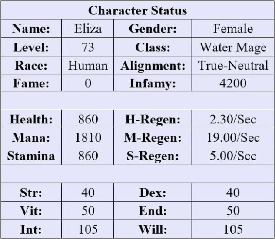

Waning sunlight filtered through the shuttered windows of Alma’s secret laboratory, indicating that it was nearly nightfall. Eliza sat at her workbench, her brow furrowed in concentration as she stared at the small glass vial resting on the table. Her hand wiped at the sweat beading on her forehead, her concentration never breaking.
Taking a deep breath and moving with exaggerated care, Eliza picked up a nearby petri dish and used a glass utensil to gingerly slide the mold on its surface into the mixture – being careful not to touch it with her bare skin. She held her breath as she watched the contents absorb the mold before slowly changing color.
Green.
Yellow.
Then the mixture settled on a water-like consistency and opacity, signaling that she had failed. Again.
Eliza just stared at the vial for a long moment. She had lost count of how many times she had tried to brew a new paralytic poison using the Carnivore Mold. Frustration boiled and frothed in veins. It was starting to look impossible – just like the Hippie’s quest. And Lord Baen’s stupid task. And her parents’ bottomless expectations.
With a sudden jerk of her hand, Eliza swiped the table, scattering the contents across the lab. Vials and circular dishes crashed against the ground to the sound of glass shattering. Amid the echoing crash, Eliza just sat there, her thoughts a chaotic whirlwind. The only thing that broke through the tempest was the aching in her hand, which just served to make even angrier. Nothing ever seemed to work out in her favor.
“I heard a crash…” Alma spoke up from behind Eliza. “Oh, what happened in here?”
Eliza forced herself to take a deep breath, trying to quiet her raging heartbeat. “I-I’m sorry,” she muttered, her face sinking into her hands. “I just got frustrated. I’ll clean it up and replace what I’ve broken.”
“Hmm. I’m not too worried about a bit of broken glass,” the older woman replied calmly stepping up beside the table and taking a seat across from Eliza. “I’m more concerned about why you felt those vials needed to be obliterated.”
Eliza ventured a glance at Alma, only to see a slight grin curling her wrinkled lips. “It’s just… everything,” she muttered.
“That’s a bit vague. Although, I suppose you don’t have to worry about telling me specifics. At my age, I’m bound to forget anyway,” Alma replied, her smile widening.
“It’s the Hippie and my family. Oh, and Lord Baen blackmailed me into helping him with his stupid squabble with Lord Cairn,” Eliza said, rubbing at her eyes.
“Lord Baen did what?” Alma demanded, anger coloring her voice.
Eliza looked up in surprise. This was the first time she had ever heard Alma sound upset. “He indicated that he knew that I was the Ice Witch, and he then implied that he would reveal that information if I didn’t come up with some way to stop Lord Cairn from smuggling stolen goods through that farm to the north.”
“Mischievous bastard,” Alma muttered, her eyes flitting to the vials along the wall. “I wonder how we should kill him… A poison targeting the nervous system would be my preference. That way he will still be conscious at the end.” She sighed. “Although, it probably wouldn’t work. He’s always been spineless.”
“I doubt killing him would do any good anyway,” Eliza murmured, not finding any humor in Lord Baen’s death at the moment. “It would probably just start a war and create a power vacuum in the city. Things don’t seem to be going too well between the two houses as it is.”
“Well, a woman can still dream,” Alma replied bitterly. “Maybe just a lingering illness? Something targeting the reproductive system perhaps… She hesitated for a moment, shaking her head before continuing, “Moving on. I’m not sure I can help with the family issues, but what is our idiot god up to now?”
“He wants me to steal a massive bell from the same farm,” Eliza groaned into her hands. “Except I have no idea how to accomplish that feat. It’s in a bell tower a few stories off the ground, it must be nearly five feet across, and it probably weighs a ton.”
“That seems… challenging,” Alma replied cautiously. “Sorry, I’m drawing a blank on how to steal a giant bell.”
“Trust me, I get it,” Eliza muttered. “I haven’t come up with any great ideas either.”
She glanced to the side, her eyes focusing on the glass shards littering the floor. She had briefly considered using some sort of flammable oil. If she burned down Tollhouse Farm, that would make short work of the tower. However, that plan had some obvious problems. How would she place the barrels of oil? How would she light them? How would she get the bell back to Alma’s compound? How would she deal with the guards at the farm – which she would prefer to avoid killing? Brian and Clarice had seemed nice… well, Brian had seemed nice at least. In any event, fire didn’t seem like a great strategy.
As she followed the trail of glass that ran along the floor, Eliza noticed something strange. A filmy gray substance was slowly crawling its way up the leg of a nearby workbench. As she watched, the mold ate into the wood gradually, the organic matter feeding the insidious fungus and furthering its growth. However, its progress was stymied by a metal band around the base of the leg, which limited its ability to keep devouring the wood.
As she watched the Carnivore Mold work, the tantalizing whisper of an idea flitted through Eliza’s mind. “Okay, this is going to seem like a weird question,” Eliza began slowly. “Is there a way to mutate or change the growth pattern of certain plants?”
Alma cocked her head, following Eliza gaze to the mold. A brief smile flashed across the woman’s face. “Ahh, I see. Yes, it’s possible, although it requires Intermediate proficiency in Herbalism to learn the skill.”
With a quick gesture, Eliza opened her Character Status and skill menu.

She had continued to level from her remaining traps in the nearby forest, although she hadn’t renewed them lately and her progress had begun to slow. She felt a pang of guilt as she looked at her level-up notifications, but she couldn’t ignore the fact that this was an easy way to gain experience and money. With a swipe of her hand, she shifted to her skill list, noticing that her Herbalism skill was currently at Intermediate Level 2.
“I should be able to learn the new ability,” Eliza said, turning her attention back to Alma.
The older woman smiled slightly. “Good, the technique itself is rather simple but requires detailed knowledge of the plant you are trying to manipulate.” She stood and walked to the other side of the lab, retrieving a small potted plant. As she returned, Eliza could see that it was a Calypsis Leaf – a basic catalyst.
Alma set the plant on the workbench. “Now watch closely,” she instructed.
The older woman’s hand hovered over the plant, lingering only a few inches away. Eliza noticed that Alma’s eyes turned a solid sapphire as she channeled her mana, small droplets of energy accumulating along and clinging to the skin of her finger. As the mana grew, a single drop broke away and splashed against a leaf.
Eliza stared in disbelief as she watched the energy course through the plant, staining the veins a brilliant blue. New shoots immediately began to arch away from the plant, stretching into the air as leaves sprouted along new stalks. A moment later, blooms had appeared among the branches – the plant doubling in size as she watched.
“The growth effect is relative to the mana you imbue into the plant and its natural resources,” Alma explained, her mana receding and her eyes shifting back to a normal color.
“Natural resources?” Eliza echoed in confusion.
Alma nodded. “See how this plant was constrained by the pot? That limits its growth. We are just accelerating natural growth, which means that the same soil nutrients and moisture must also be present.” The alchemist ran her fingers along the soil of the pot and Eliza could now see that it was bone-dry.
“So, there are limitations…” she murmured.
“Indeed,” Alma nodded, eyeing her with a knowing expression. “The mana infusion must also be maintained continuously to accelerate the growth.”
“It’s still amazing,” Eliza whispered, staring at the plant and itching to try this new skill.
“I thought you might like it,” Alma replied with a soft chuckle. “Here, let me show you how it works.” As she finished speaking, the older woman placed a finger to Eliza’s forehead, a trickle of mana tingling her skin.
A moment later, the requisite gestures flooded Eliza’s mind, and a notification appeared on her system UI.
New Spell: Accelerated Growth
Your knowledge of Herbalism and your growing affinity with water mana enable you to accelerate the growth of certain plants. This skill must be channeled to maintain the effect. At higher levels, this ability can be used to create entire gardens at will – assuming you have suitable conditions and the requisite plants. Someone could even say that you now have a blue thumb for this sort of work…
Skill Level: Beginner Level 1
Effect: Accelerated plant growth. The growth rate increases with your skill level.
Cost: 100 mana/second.
“This is fantastic,” Eliza murmured as she reviewed the skill notification, ignoring the stupid joke. “Thank you, Alma.”
“Don’t mention it,” the older woman replied evenly. “Maybe you can find some use for the skill given your current predicament.”
With that, the alchemist rose, grabbing her cane and heading for the exit. As she neared the door, Alma hesitated and turned back to Eliza. “Just be careful, girl. I have a bad feeling about these quests you’re tackling.”
Eliza met her gaze, seeing the concern in the older woman’s eyes. She remembered clearly what had happened the last time she had experimented – including the reputation she had garnered around Falcon’s Hook. Her traps might have allowed her to level quickly, but they had also allowed Lord Baen to blackmail her and forced her to hide her new, infamous persona. Her ideas seemed to have unforeseen consequences.
“Don’t worry, I’ll be careful,” Eliza said solemnly.
With that, the older woman left the lab and Eliza turned her attention back to the nearby workbench, where the Carnivore Mold was still trying vainly to eat away at the table leg. Despite Alma’s words of caution, Eliza couldn’t help the small excited smile that crept across her face as she considered what she was about to attempt next.
This was going to be interesting at the very least.